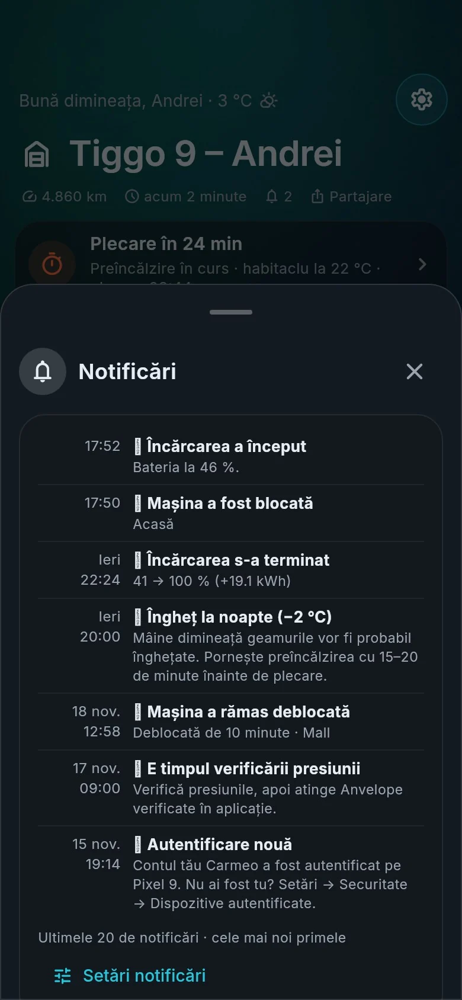
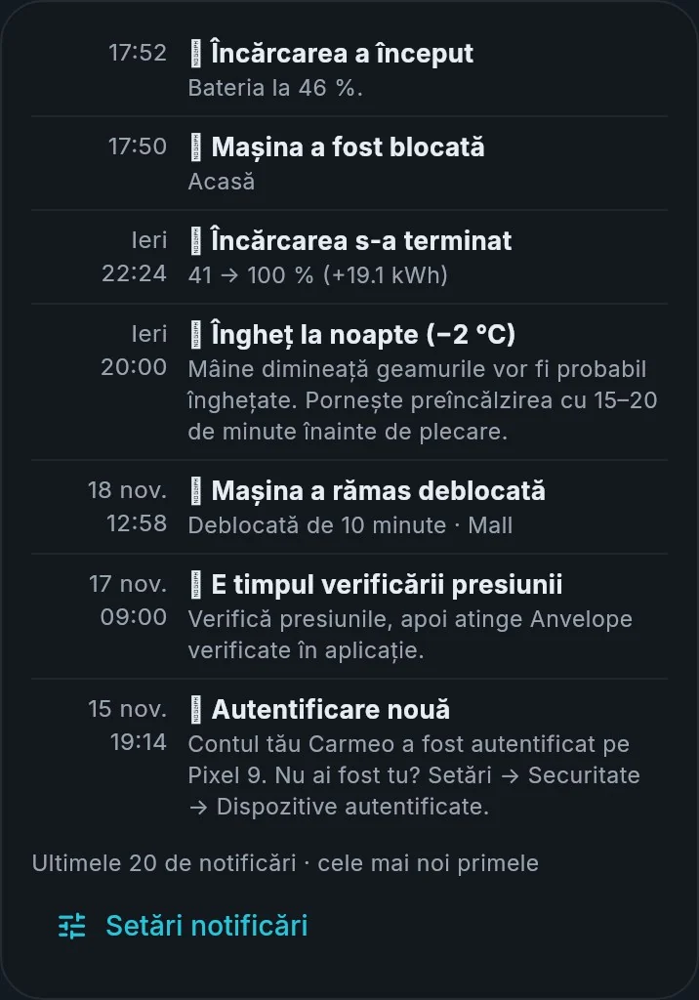
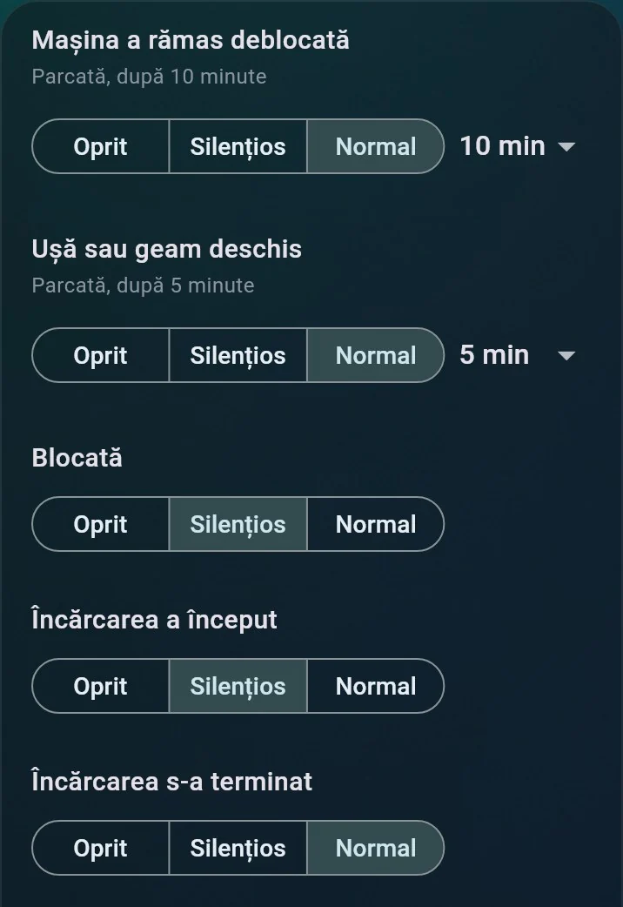
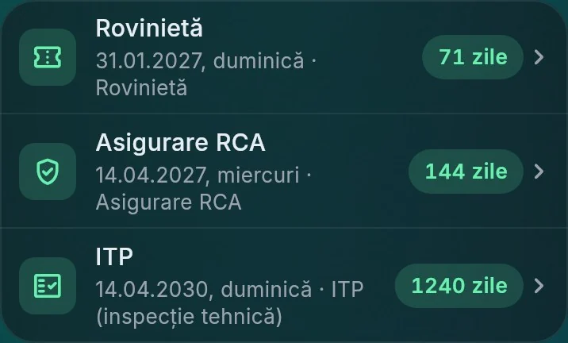
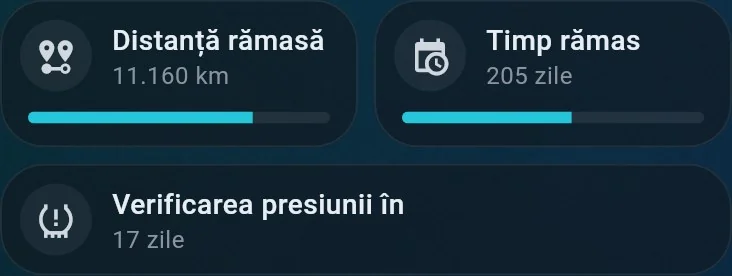

Toate funcțiile
Alerte
Te anunță când contează. Tace când nu.
Carmeo veghează asupra mașinii în locul tău – iar tu decizi, telefon cu telefon, care alerte sună, care sosesc în liniște și care rămân oprite.


Lucrurile despre care ai vrea să știi.
Fiecare alertă spune ce s-a întâmplat și unde, iar lista din aplicație le păstrează pe cele mai recente.
- A rămas deschisă – mașina deblocată, o ușă sau un geam deschis – după timpul de așteptare ales de tine.
- Încărcare – a început, s-a terminat, a ajuns la ținta ta, s-a oprit prea devreme sau e conectată, dar nu se încarcă.
- Vreme – îngheț la noapte, mașina parcată în caniculă, ploaie care vine când ceva e deschis.
- Mașina însăși – baterie sau combustibil scăzut, presiune scăzută în anvelope, bateria care se descarcă în parcare.
- Securitate – mașina ta se mișcă – nu ești tu? – și fiecare autentificare nouă în contul tău.

Oprit, Silențios sau Normal – pentru fiecare alertă.
Fiecare telefon are propriile setări. Silențios înseamnă fără sunet și fără banner: alerta așteaptă pur și simplu în lista de notificări.


Și mementouri.
Un service care se apropie, verificarea periodică a presiunii din anvelope, o rovinietă, un ITP sau o asigurare care expiră – Carmeo îți amintește la timp.
Încearc-o pe mașina ta.
Carmeo este gratuit. Intră în grupul de testare deschisă pe iPhone sau Android.